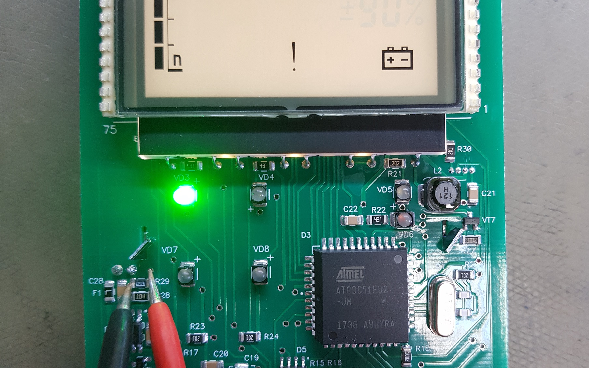

В перечень записать дату, количество блоков, отданных в настройку, и ФИО регулировщика
Измерение высокого напряжения на БОИ2 (рис. 1).
Рисунок 1
Проверять ток потребления удобно на резисторе R29 (рис. 2). Режим измерения на мультиметре 200мВ. Ток
потребления равен напряжение (1.5мВ) разделить на сопротивление резистора R29 (0.047Ом) и равен
приблизительно 30мА с включенной двойной подсветкой.

Рисунок 2
Проверять ток зарядки удобно на резисторе R35 (рис. 3). Режим измерения на мультиметре 2В. Ток потребления
равен напряжение (0.5В) разделить на сопротивление резистора R35 (1Ом) и равен приблизительно 500мА.
Рисунок 3
Отдать на линейку (приработать): включить в 4-ом режиме (скорость счета) без звука (рис. 4)